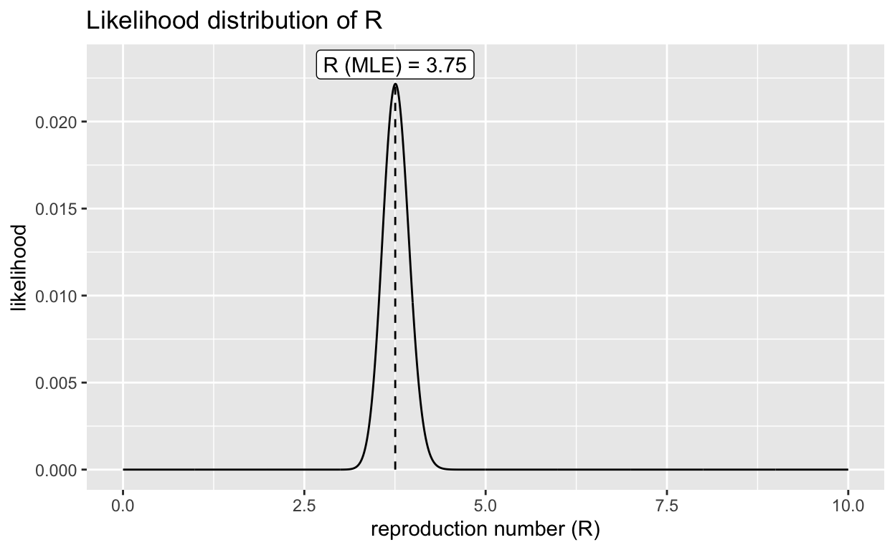

Table of Contents
\(R_0\)
How infectious was COVID-19 in Malaysia when it started? This can be measured by the basic reproduction number, \(R_0\). The basic reproduction number (\(R_0\)) is the reproduction number when there is no immunity from past exposures or vaccination, nor any deliberate intervention in disease transmission. Estimation of \(R_0\) may be based on the exponential growth slope of an epidemic curve. To do so, we assume exponentially distributed latent and infectious period of a SEIR model, and the following assumptions:
latency estimate: 3 days
serial interval estimate: mean 3.96 days, SD 4.75 days.
Below is the epidemic curve for Malaysia:
Figure 1: Click on the chart to engage its interactive mode
Peak
To identify the growth phase (and the decay phase of the curve), the peak of the curve must be identified. The peak occurred on 26th March 2020:
Figure 2: Click on the chart to engage its interactive mode
Growth & decay
The graph below illustrates the growth and decay phase of the curve:
Figure 3: Click on the chart to engage its interactive mode
Estimates of \(R_0\)
\(R_0\) from exponential growth phase of epidemic curve
Call:
lm(formula = logdata2 ~ Time)
Residuals:
Min 1Q Median 3Q Max
-1.23588 -0.25340 -0.03733 0.22525 1.26201
Coefficients:
Estimate Std. Error t value Pr(>|t|)
(Intercept) -3.369e+03 4.033e+02 -8.355 8.74e-08 ***
Time 1.840e-01 2.199e-02 8.364 8.60e-08 ***
---
Signif. codes: 0 '***' 0.001 '**' 0.01 '*' 0.05 '.' 0.1 ' ' 1
Residual standard error: 0.6103 on 19 degrees of freedom
Multiple R-squared: 0.7864, Adjusted R-squared: 0.7752
F-statistic: 69.96 on 1 and 19 DF, p-value: 8.596e-08Figure 4: Click on the chart to engage its interactive mode
[1] "3.8 [95% CI: 3, 4.7]"This mean value of \(R_0\) was modelled based on the exponential growth phase of the epidemic curve for the period 2020-03-03 to 2020-03-23. In comparison, the official declared value was 3.5, which was based on contact tracing averaging. It appears that empirical individual patient data is consistent with population level data; however, we will confirm it with further assessment.
\(R_0\) from earlyR package
A Bayesian framework for estimating \(R_0\) using population level data is available with the EpiEstim R package. The package has been later supplemented with a simpler version, the earlyR R package. Below are the \(R_0\) estimates of that Bayesian model.

\(R_0\) 95% CI
Min. 1st Qu. Median Mean 3rd Qu. Max.
3.213 3.634 3.754 3.761 3.884 4.384
2.5% 97.5%
3.423173 4.124374 
Resampling reveals a mean \(R_0\) 3.33 [95% CI: 3.08-3.60].
In perspective, one systematic review estimated a pooled \(R_0\) at 3.32 [95% CI: 2.81-3.82].
Source code
Available at https://github.com/aaimsco/rpubs
Full article
Available at https://rpubs.com/saiful